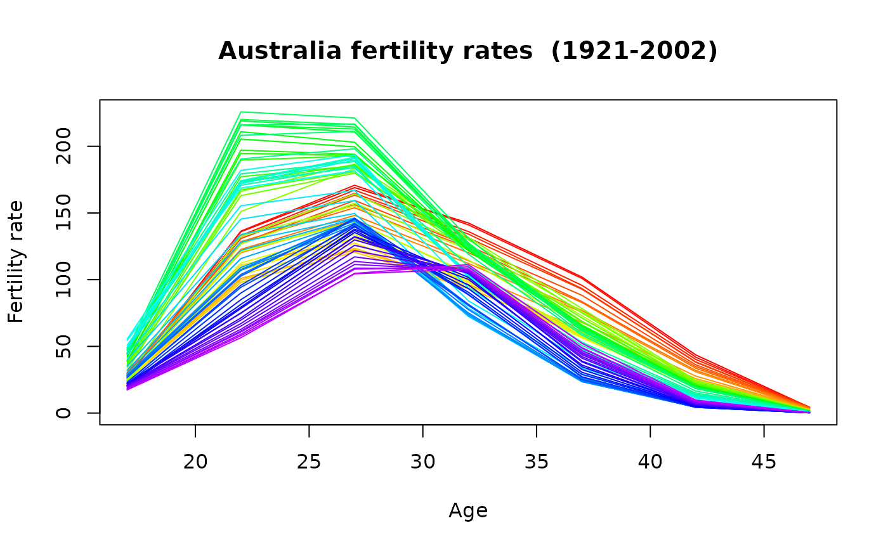

Australian fertility data
ausfert.RdAge-specific fertility rates and female child-bearing population for Australia.
Details
Australian fertility rates and populations (1921-2002) for age groups (<20, 20-24, 25-29, 30-34, 35-39, 40-44, 45+). Data taken from v3.2b of the Australian Demographic Data Bank released 10 February 2005.
Format
Object of class demogdata containing the following components:
- age
Vector of ages
- rate
List containing one matrix with one age group per row and one column per year.
- pop
Population data in same form as
rate.- type
Type of object. In this case, “fertility”.
- label
Character string giving area from which data are taken. In this case, “Australia”.
Examples
plot(aus.fert)
